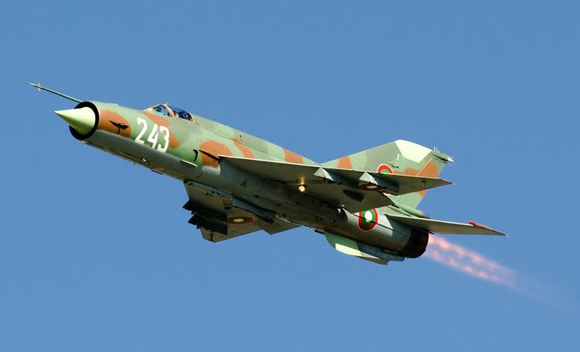

Introduction
The Mikoyan-Gurevich MiG-21 is a supersonic fighter jet developed by the Soviet Union. Nicknamed the “Fishbed” by NATO, it has been one of the most widely used jets worldwide. The MiG-21 played a crucial role in shaping modern air combat and remains an iconic aircraft in aviation history.
MIG-21 in Indian Air Force
India inducted the MiG-21 in 1963 and it became the first supersonic jet of the Indian Air Force. Over the years, India has operated more than 800 MiG-21s, making it one of the largest users of this aircraft. It played a vital role in the 1965, 1971, and Kargil wars.
- First supersonic jet of the IAF
- Used in 1965 and 1971 wars with Pakistan
- Upgraded versions served for decades
- Known as the "Flying Coffin" due to accidents, but also "Backbone of the IAF"
Legacy
The MiG-21 served the Indian Air Force for over 60 years, longer than any other aircraft. Despite controversies, it remains a symbol of India’s aerial defense history.